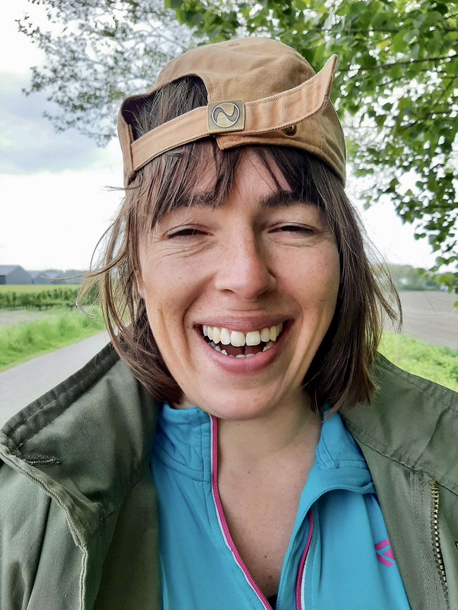

About Me

Digital designer and developer (Webflow)
I deliver wireframes and develop a website from A to Z. I design the visual designs in Figma and develop them into a responsive website. I provide original (eCommerce) web applications and, if desired, I also create strong online branding as the basis for all communications.
Unique web apps
As a person, I find quality work very important, I have an eye for detail, I think along and I meet agreed deadlines. I have knowledge and experience with Git, HTML, CSS and Javascript frameworks.
Contact: Are you looking for someone who can create a striking and unique website, application or landing page for your company or startup, possibly including branding and SEO web texts, please contact me.
Schedule a meeting